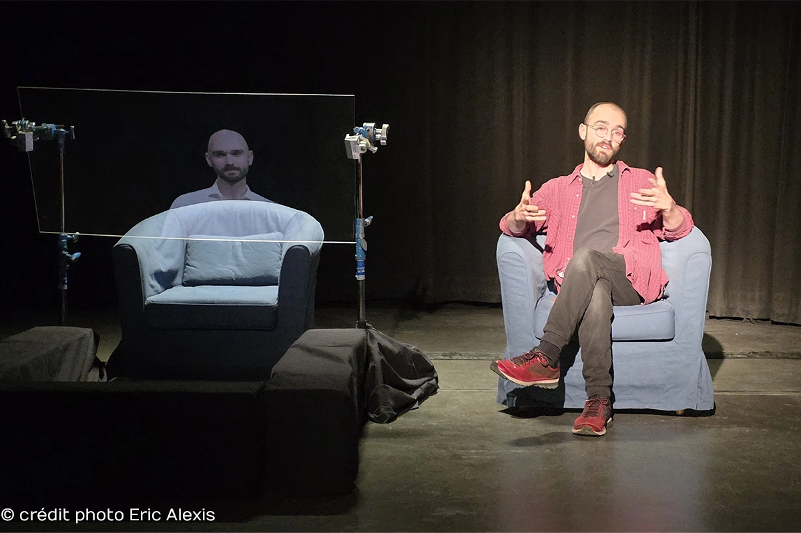

Joey Mac Intosh
Voyageur contemplant une mer de nuages, 2026
Joey Mac Intosh est un chercheur et un artiste interdisciplinaire bilingue travaillant dans les domaines du théâtre, du cinéma et de la littérature. Comédien de profession, il est diplômé de l'UQAM en scénarisation cinématographique et de l'Université Concordia en performance théâtrale. Il termine présentement une maîtrise en cinéma, jeu vidéo, télévision et arts médiatiques option recherche-création à l'Université de Montréal.
La performance et le soi sont au cœur du processus artistique et académique de Joey Mac Intosh. Utilisant principalement l'autoethnographie comme méthodologie et des protocoles d'expérimentations comme véhicule, ses œuvres explorent ses amours, sa solitude et sa neurodivergence. Depuis son diagnostic en tant qu'épileptique, « guérir à travers l’art » est devenu sa devise.

moniteur, enregistrement vidéo, chaise, écouteurs
dimensions variables
Voyageur contemplant une mer de nuages examine le rapport avec soi, le dédoublement et la solitude à travers une performance où l'auteur s'est vu contraint de se confier à une intelligence artificielle (IA) psychologue (« psychobot ») qui reprend son apparence et sa voix. Ce qui en découle est une conversation entièrement improvisée. Cette performance ne se veut en aucun cas une réponse, mais une simple exploration d’un futur possible qui nous guette.